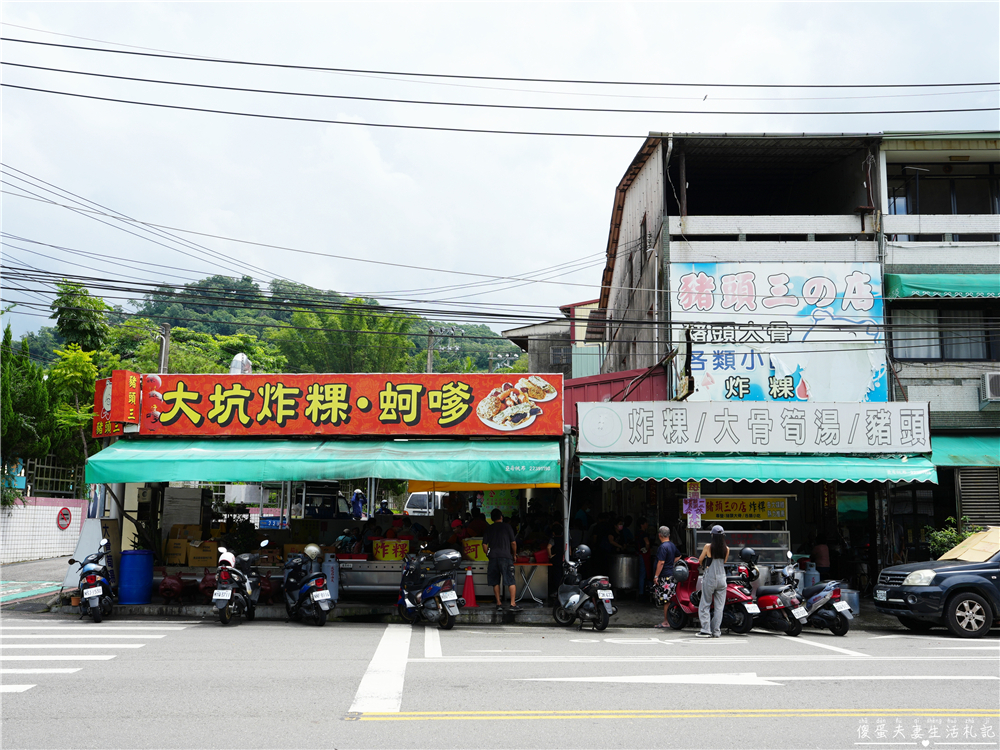
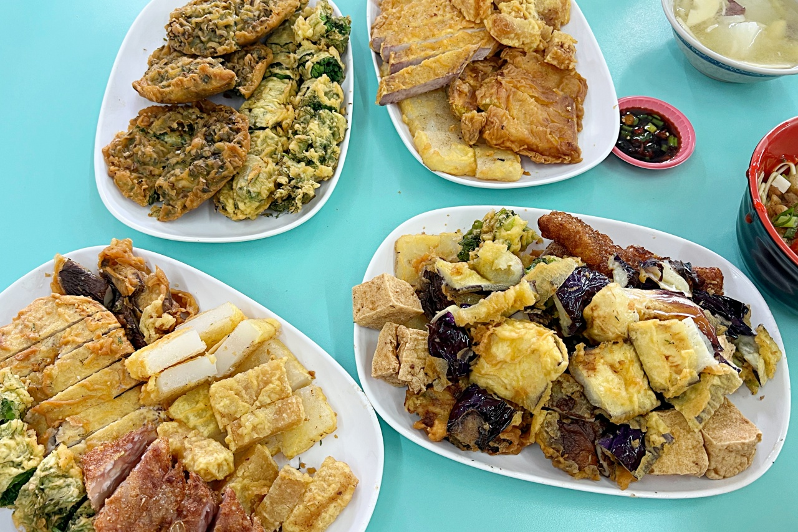
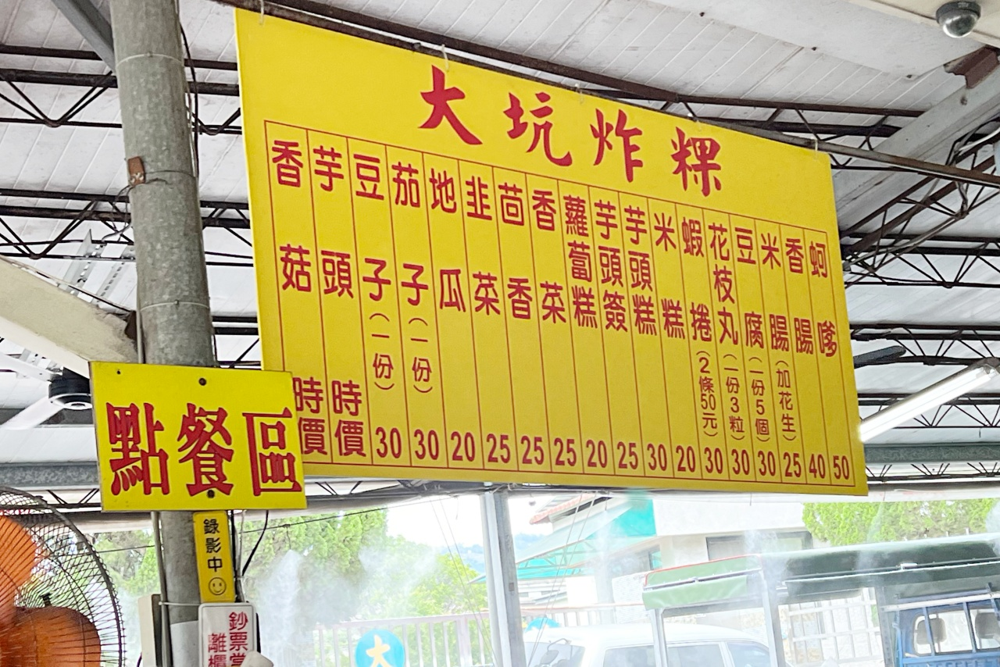
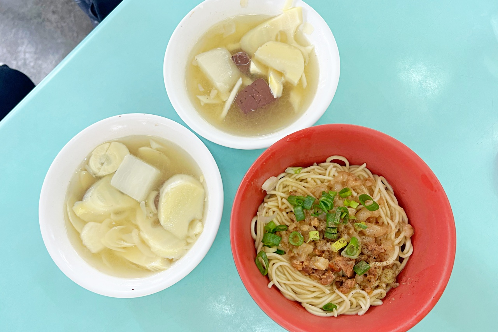

地址： 406台中市北屯區東山路二段96-8號
電話： 04 2239 1782
營業時間：週三到週五 10:00–17:00 \ 週六週日 10:00–18:00 \ 週一週二公休

台中大坑排隊美食-豬頭三的店，這間位於大坑超人氣美食，用餐時間人潮不斷，炸粿、蚵嗲、筍湯都是必點，簡單美味只要銅板價，內行的還會加點大骨竹筍湯跟豬頭喔!!來台中大坑一日遊，一定要順道吃一下!!

是來到台中後花園大坑一帶遊玩，值得一試的銅板小吃。建議只要來到大坑風景區步道爬山，推薦跟家人朋友一起來這裡吃，以種類多樣的炸物最受顧客喜愛啦，像是炸粿、炸蚵嗲、炸蔬菜、炸地瓜片、炸米糕…等等，還有每天新鮮熬製的大骨筍湯，幾乎是人手一碗。每日限量的豬頭焢，更是必須碰運氣才有機會吃到。食材新鮮、種類多樣，擺在桌上任君挑選，很容易就夾滿滿一盤，加上價格佛心，不只假日人潮多，平日也是容易滿座喔。


喜歡吃筍子的朋友記得點筍湯，很新鮮的筍子湯配上大骨熬製的湯底，湯頭清甜無比，每一口的筍片鮮脆飽滿。這個可以免費加湯喔。淋上肉燥的乾麵再搭配上胡椒粉、東泉辣椒醬，簡單好吃。